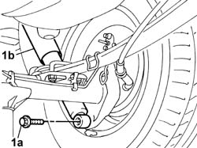
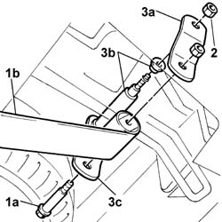
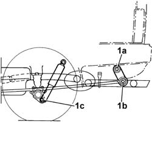

4420A68 shackles for one l/h or r/h rear suspension leaf spring - replace
- Path
- Procedures > 44 SUSPENSION AND WHEELS > 4420 REAR SUSPENSION > 4420A rear dampers and springs > 4420A68 shackles for one l/h or r/h rear suspension leaf spring - replace
- Kind
- repair procedure (removal / refitting; the operation number is the code)
- Applies to
- all engines; all production periods
- Interactive page
- https://sloeber94.github.io/elrnDB-fDbl/en/#/2584753
Applies to: all engines; all production periods; only with equipment: Cargo trim level
 Removing
Removing
 Refitting
RefittingPlace the car on a lift.
Position a hydraulic column jack beneath the rear axle near the leaf spring to be removed in order to support the axle.
1. Undo the lower bolt (1a) securing the shock aborber (b) to the rear axle.
Slightly lower the hydraulic wrench to unload the rear suspension

Applies to: all engines; all production periods; only with equipment: Cargo trim level
1. Undo rear bolt (1a) securing the shackles to leaf spring (1b).
2. Undo the upper nut securing the shackles to the body.
3. Remove outer shackle (3a), withdraw the pin and rubber bush (3b) and withdraw inner shackle (3c).

Applies to: all engines; all production periods; only with equipment: Cargo trim level
Refitting
RemovingRefit the inner shackle, fit the pin and rubber bush into the holes on the body.
Fit the lower bolt to the inner shackle and leaf spring.
Fit the outer shackle.
Screw in the shackle retaining nuts without tightening.
Slightly compress the shock absorber and tighten the lower retaining bolt.
Remove the hydraulic jack.
Carry out final tightening of the rear leaf spring fastenings under theoretical design load conditions Design load conditions on the front axle are achieved by ballasting the car (carry out this operation with the wheels fitted and the car on the ground or an appropriate lift). This is done by arranging loads iin the rear part of the car as described below.
Loads are calculated without the end stop buffer fitted; the values in brackets indicate loads to be applied with the end stop buffer fitted.
Panorama version = 175 kg (350 kg)
Van version = 290 kg (510 kg)
Van version (higher payload) = 440 kg (660 kg).
1. Tighten to torque nut (1a) and nut (1b) securing the rear leaf spring shackles and lower bolt (1c) securing the shock absorber to the rear axle.
 | Fastening | Component | Ø | Value (daNm) |
|---|---|---|---|---|
1a | Nut | REAR LEAF SPRING SHACKLES | M12 x 1.25 | (on bodyshell) 8 |
| Fastening | Component | Ø | Value (daNm) |
|---|---|---|---|---|
1b | Nut | REAR LEAF SPRING SHACKLES | M12 x 1.25 | (below leaf spring) 8 |
| Fastening | Component | Ø | Value (daNm) |
|---|---|---|---|---|
1c | Bolt | REAR DAMPER | M14 x 1.5 | (lower) 11 |
